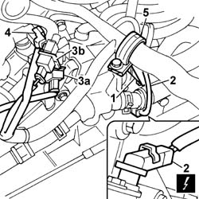
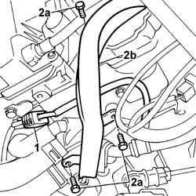
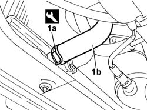
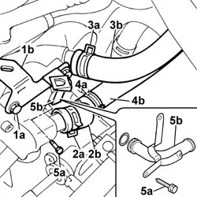
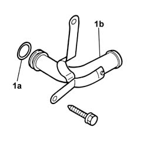

1088D34 RIGID PIPE/CONNECTOR (ONE) FOR ENGINE COOLING CIRCUIT - R.R.
- Path
- Procedures > 10 ENGINE > 1088 ENGINE COOLING > 1088D COOLANT PIPES AND HOSES > 1088D34 RIGID PIPE/CONNECTOR (ONE) FOR ENGINE COOLING CIRCUIT - R.R.
- Kind
- repair procedure (removal / refitting; the operation number is the code)
- Applies to
- engines: 2.0 16v, 3.0 24V V6; all production periods
- Interactive page
- https://sloeber94.github.io/elrnDB-fUlss/en/#/179007191
Applies to: engines: 3.0 24V V6; all production periods
 Removing
Removing
 Refitting
RefittingPosition the vehicle on a lift.
Disconnect the negative battery terminal.
Description | Connector | |
|---|---|---|
. | Battery |
Op. 7055B54 UNDER ENGINE PROTECTION/GUARD - R.R.
Op. 5010B18 HEATING VENTILATION UNIT AIR INTAKE - R+R
Op. 5050B34 WINDSCREEN WIPER ARM/S COMPLETE WITH BLADE - R+R
Op. 7210E22 R.R. WINDSCREEN BASE TRIM
Op. 1016A42 LEFT HAND CYLINDER HEAD IGNITION COIL COVER - R+R
Op. 1048A47 SLEEVE FROM RIGID PIPE TO THROTTLE BODY - R R
See descriptions
1. Disconnect the electrical connection from the engine coolant temperature sensor.
Description | Connector | |
|---|---|---|
1 | Engine coolant temperature sensor/sender unit |
2. Disconnect the electrical connection from the engine rpm sensor.
Description | Connector | |
|---|---|---|
2 | Rpm sensor |
3. Disconnect electrical connections (3a) for the knock s ensor on the lh head and (3b) for knock sensor on rh head.
Description | Connector | |
|---|---|---|
3a | Detonation sensor |
Description | Connector | |
|---|---|---|
3b | Detonation sensor -2 |
4. Disconnect the electrical connection from reference sensor for cylinder - 1 on lh head.
Description | Connector | |
|---|---|---|
4 | Cylinder reference sensor - 1 |
5. Undo the bolt, remove the retaining collar and move the wiring out of the working area.

Applies to: engines: 3.0 24V V6; all production periods
1. Working on the right head, flywheel side, disconnect the electrical connection for the lower Lambda sensor on the left pre-catalyzer.
Description | Connector | |
|---|---|---|
4 | Lambda sensor on catalyzer |
2. Undo bolts (2a) and remove wiring channel (2b) on lh head.
Release wiring and move out of working area.

Applies to: engines: 3.0 24V V6; all production periods
Position a suitable container for collecting the engine coolant.
1. Use an appropriate tool to loosen retaining collar (1a), disconnect lower sleeve (1b) from the radiator and drain the coolant into the container.
Description | Code | Function | |
|---|---|---|---|
1a | Caliper | Band opening |

Applies to: engines: 3.0 24V V6; all production periods
1. Unscrew retaining bolts (1a) and remove bracket (1b) from the thermostat case.
2. Undo retaining band (2a) and remove the plug (2b).
Description | Code | Function | |
|---|---|---|---|
2a | Caliper | Band opening |
3. Loosen retaining band (3a) and remove pipe (3b) from the coolant manifold on the cylinder head to the heater.
Description | Code | Function | |
|---|---|---|---|
3a | Caliper | Band opening |
4. Loosen retaining band (4a) and remove pipe (4b) from the coolant reservoir to the rigid pipe.
Description | Code | Function | |
|---|---|---|---|
4a | Caliper | Band opening |
5. Undo bolt (5) securing the pipe to the thermostat case and remove rigid pipe (5b) from the crankcase.

Applies to: engines: 3.0 24V V6; all production periods
Refitting
Removing1. Replace gasket (1a) on the rigid elbow joint (1b).

Applies to: engines: 3.0 24V V6; all production periods
Position the rigid elbow joint in its seat on the crankcase and tighten the bolt to the thermostat case.
Connect the pipe from coolant reservoir to rigid pipe and restore the retaining band.
Description | Code | Function | |
|---|---|---|---|
. | Caliper | Band opening |
Position the plug and renew the retaining band.
Description | Code | Function | |
|---|---|---|---|
. | Caliper | Band opening |
Connect the pipe from coolant manifold on the cylinder head to the heater and restore the retaining band.
Description | Code | Function | |
|---|---|---|---|
. | Caliper | Band opening |
Fit the bracket on the thermostat case and tighten the fixing bolts.
Connect the lower sleeve to the radiator and restore the retaining band.
Description | Code | Function | |
|---|---|---|---|
. | Caliper | Band opening |
Position the wiring channel to the lh head and tighten the bolts.
Arrange the wiring.
Connect the electrical connection for the lower Lambda sensor on the lh preconverter.
Description | Connector | |
|---|---|---|
. | Lambda sensor on catalyzer |
Position the wiring anchorage collar and tighten the bolt
Disconnect electrical connection from cylinder - 1 reference sensor on lh head.
Description | Connector | |
|---|---|---|
. | Cylinder reference sensor - 1 |
Connect electrical connections nock sensor on lh head and knock sensor on rh head.
Description | Connector | |
|---|---|---|
. | Detonation sensor |
Description | Connector | |
|---|---|---|
. | Detonation sensor -2 |
Connect the electrical connection for the engine rpm sensor.
Description | Connector | |
|---|---|---|
. | Rpm sensor |
Connect the electrical connection to the engine coolant temperature sensor.
Description | Connector | |
|---|---|---|
. | Engine coolant temperature sensor/sender unit |
See descriptions
Op. 1048A47 SLEEVE FROM RIGID PIPE TO THROTTLE BODY - R R
Op. 1016A42 LEFT HAND CYLINDER HEAD IGNITION COIL COVER - R+R
Op. 7210E22 R.R. WINDSCREEN BASE TRIM
Op. 5050B34 WINDSCREEN WIPER ARM/S COMPLETE WITH BLADE - R+R
Op. 5010B18 HEATING VENTILATION UNIT AIR INTAKE - R+R
Op. 7055B54 UNDER ENGINE PROTECTION/GUARD - R.R.
Connect the negative battery terminal.
Description | Connector | |
|---|---|---|
. | Battery |
Op. 0010T21 ENGINE COOLANT - CHECK DENSITY AND CHANGE, IF NECESSARY
Remove the vehicle from the lift.
Applies to: engines: 2.0 16v; all production periods
Removing
RefittingOp. 1016A26 TAPPET COVER WITH BUILT IN OIL VAPOUR SEPARATOR - R.R.
Topics linked from this page (8)
- 0010T21 ENGINE COOLANT - CHECK DENSITY AND CHANGE, IF NECESSARY
- 1016A26 CAM COVER WITH BUILT IN OIL VAPOUR SEPARATOR R R
- 1016A42 LEFT HAND CYLINDER HEAD IGNITION COIL COVER - R+R
- 1048A47 SLEEVE FROM RIGID PIPE TO THROTTLE BODY - R R
- 5010B18 CLIMATE CONTROL UNIT AIR INTAKE - R.R.
- 5050B34 WINDSCREEN WIPER ARM/S COMPLETE WITH BLADE - R+R
- 7055B54 UNDER-ENGINE GUARD - R R
- 7210E22 WINDSCREEN BASE TRIM